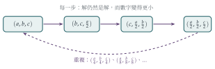

STEP III 2022，第 2 題
繼續之前，請先閱讀題目（原題為英文）。題目載於 OCR 提供下載的 2022 年 STEP 試卷（zip 檔案）內的 STEP III 試卷： www.ocr.org.uk/Images/696587-2022-past-papers.zip
引子
怎樣才能證明一條方程沒有整數解？你不可能逐一試遍所有可能，因為可能性有無窮多個。費馬（Pierre de Fermat）在 1630 年代找到了一個方法：證明任何一個解都會產生另一個數字更小的解，然後又產生一個更小的，如此無休止地繼續下去。可是正整數不可能永無止境地愈變愈小。所以，從一開始就根本沒有解。
費馬把這個方法稱為無窮遞降法（method of infinite descent），並且深以為傲。它是 第 1.3 節 中良序原理（well-ordering principle）的另一面，至今仍是證明方程無解的主要工具之一。
動筆之前
四個部分的格局都一樣：假設有解，把解縮小，得出矛盾（contradiction）。問題在於怎樣縮小。
在第 (i) 部分，看看 \(a^3 + 2b^3 + 4c^3 = 0\)。三項之中有兩項明顯是偶數。這告訴你第三項有甚麼性質？
每一次遞降都是由這類觀察開始的：某種整除性（divisibility）是你無法迴避的。
逐步解題
階段 1 第一次遞降
由於 \(a^3 = -2b^3 - 4c^3\)，\(a^3\) 這個數是偶數，所以 \(a\) 是偶數（奇數的立方是奇數）。設 \(a = 2p\)。那麼 \(|p| = |a|/2 < |a|\)，代入後得 \[8p^3 + 2b^3 + 4c^3 = 0 \quad\Longrightarrow\quad 4p^3 + b^3 + 2c^3 = 0.\]
新的方程是 \(4p^3 + b^3 + 2c^3 = 0\)。它的係數和原來一樣，只是輪換了位置。你可以再用同一招嗎？
現在 \(b^3 = -4p^3 - 2c^3\) 是偶數，所以 \(b = 2q\)，其中 \(|q| < |b|\)，再除以 \(2\) 便得 \(2p^3 + 4q^3 + c^3 = 0\)。同樣地，\(c\) 必定是偶數：\(c = 2r\)，其中 \(|r| < |c|\)，再除以 \(2\)， \[p^3 + 2q^3 + 4r^3 = 0.\] 這正是原來的方程，只是以 \(p\)、\(q\)、\(r\) 取代了 \(a\)、\(b\)、\(c\)。每個數的大小都減半，而且沒有一個是零，因為把非零的數減半不可能得到零。
把以上論證寫成一個證明（proof），說明非零解並不存在。你究竟應該假設甚麼是「最小」的？
在所有非零整數解之中，選取 \(|a|\) 最小的一個。（只要有解存在，良序原理就容許我們這樣做。）上述論證會產生另一個非零解，並且 \(|p| < |a|\)，與最小性矛盾。所以沒有非零解。■
另一個等價的說法是：由一個解出發，我們可以構造出無窮多個解，它們滿足 \(|a| > |p| > \cdots\)，即一個嚴格遞減的無窮正整數數列，而這是不可能的。
階段 2 換一個質數
在 \(9a^3 + 10b^3 + 6c^3 = 0\) 中，奇偶性（parity）看來幫不上忙。看看係數 \(9\)、\(10\)、\(6\)。哪一個質數（prime）整除其中兩個？
質數 \(3\) 整除 \(9\) 和 \(6\)，所以 \(3\) 整除 \(10b^3\)，因此 \(3\) 整除 \(b\)。設 \(b = 3q\) 並除以 \(3\)： \[3a^3 + 90q^3 + 2c^3 = 0.\] 現在 \(3\) 整除 \(2c^3\)，所以 \(c = 3r\)；再除以 \(3\) 得 \(a^3 + 30q^3 + 18r^3 = 0\)。於是 \(3\) 整除 \(a\)：\(a = 3p\)，再除以 \(3\) 一次， \[9p^3 + 10q^3 + 6r^3 = 0.\] 這與原來的方程完全相同，只是換成了較小的非零數。根據同樣的遞降論證，方程沒有非零解。■
階段 3 模 3 下的平方數
每個整數都可寫成 \(3n\)、\(3n+1\) 或 \(3n-1\) 的形式。它們的平方模（modulo）\(3\) 是甚麼？
\((3n \pm 1)^2 = 9n^2 \pm 6n + 1 = 3(3n^2 \pm 2n) + 1\)，比 \(3\) 的倍數多一。而 \((3n)^2\) 是 \(3\) 的倍數。所以平方數除以 \(3\) 的餘數（remainder）是 \(0\) 或 \(1\)，永遠不會是 \(2\)。
現在如果 \(a^2 + b^2\) 是 \(3\) 的倍數，餘數的可能組合是 \(0+0\)、\(0+1\)、\(1+0\) 和 \(1+1\)，分別得出 \(0\)、\(1\)、\(1\)、\(2\)。只有第一種是 \(3\) 的倍數，所以 \(a\) 和 \(b\) 都必定是 \(3\) 的倍數。
如果 \(a^2 + b^2 = 3c^2\)，而 \(a = 3p\)、\(b = 3q\)，你對 \(c\) 有甚麼結論？
我們得到 \(9p^2 + 9q^2 = 3c^2\)，所以 \(c^2 = 3(p^2 + q^2)\) 是 \(3\) 的倍數，因此 \(c = 3r\)。於是 \(9p^2 + 9q^2 = 27r^2\)，即 \(p^2 + q^2 = 3r^2\)：同一條方程，較小的數。又是遞降。■
階段 4 變奏：方程變了
在 \(a^2 + b^2 + c^2 = 4abc\) 中，右邊是 \(4\) 的倍數。平方數模 \(4\) 是甚麼？
偶數的平方是 \(4\) 的倍數，奇數的平方則比 \(4\) 的倍數多一（\((2n+1)^2 = 4n^2 + 4n + 1\)）。所以 \(a^2 + b^2 + c^2\) 除以 \(4\) 的餘數是 \(0\)、\(1\)、\(2\) 或 \(3\)，視乎 \(a\)、\(b\)、\(c\) 之中有多少個是奇數。由於右邊是 \(4\) 的倍數，它們沒有一個可以是奇數。設 \(a = 2p\)、\(b = 2q\)、\(c = 2r\)： \[4(p^2 + q^2 + r^2) = 32\,pqr \quad\Longrightarrow\quad p^2 + q^2 + r^2 = 8\,pqr.\]
這並不是同一條方程：\(4\) 變成了 \(8\)。遞降法還行得通嗎？
竅門在這裏：證明一個更強的命題。考慮所有以下形式的方程 \[x^2 + y^2 + z^2 = 2^m\, xyz \qquad\text{其中 } m \geq 2.\] 對任何這樣的 \(m\)，右邊都是 \(4\) 的倍數，所以完全相同的論證顯示 \(x\)、\(y\)、\(z\) 全是偶數。把它們減半，便得到含 \(2^{m+1}\) 的方程的一個解，而這條方程仍屬這種形式。因此，由 \(m\) 方程的一個非零解，我們得到 \(m+1\) 方程的一個較小的非零解。在這個方程族中任何一條方程的所有解之中，取 \(|x|\) 最小的一個，便得出矛盾。特別地，\(a^2 + b^2 + c^2 = 4abc\) 沒有非零解。■
有時候，你想證明的命題太弱，不足以支撐它自身的歸納（induction），補救的方法是證明一個更一般、能夠自我支撐的命題。這個技巧在大學裏出奇地常見。

回顧
遞降需要整除性的來源。每一次，我們都找到一個質數 \(p\)（這裏是 \(2\) 或 \(3\)），它必然整除所有變數，然後把它除去。
模 \(n\) 運算正是找出它的方法。考察模 \(2\)、\(3\) 或 \(4\) 的餘數，把「有沒有任何可能行得通？」變成一個簡短的有限驗證。
如果方程變了，就推廣。第 (iv) 部分需要一整族方程，而這一族方程在遞降步驟下是封閉的。
背後的數學
費馬用無窮遞降法證明了 \(x^4 + y^4 = z^2\) 沒有正整數解。在他著名的「最後定理」之中，這是他唯一留下證明的情況，它解決了 \(x^n + y^n = z^n\) 在 \(n = 4\) 時的情形。歐拉（Euler）其後用遞降法處理 \(n = 3\) 的情形，當中有一個漏洞，後來才被補上。遞降法至今仍是現代理論的起點：關於 第 1.9 節 中那類曲線的莫德爾–韋伊定理（Mordell–Weil theorem），其證明就是一個精密的遞降。
局部障礙
本節的每一個證明，都是靠考察模某個數的餘數來完成的。如果一條方程對某個 \(n\) 而言模 \(n\) 無解，或者沒有實數解，它當然沒有整數解。這類理由稱為局部障礙（local obstructions）；到了大學，你會遇到\(p\) 進數（p-adic numbers），那是一種同時研究模 \(p, p^2, p^3, \ldots\) 所有餘數的方法。
哈塞（Hasse）與閔可夫斯基（Minkowski）有一個精彩的定理：對於像 \(a^2 + b^2 = 3c^2\) 這樣的二次方程，局部障礙就是僅有的障礙——如果沒有任何「局部」的理由令它無解，它就確實有有理數解。對三次方程而言，這個結論卻徹底失效。Ernst Selmer 在 1951 年證明了 \[3x^3 + 4y^3 + 5z^3 = 0\] 模任何整數都有解，在實數中也有解，但沒有非零整數解。解釋「局部到整體」原理何時失效、為何失效，是現代數論的一大主題。
一條確實有解的方程
第 (iv) 部分有一個著名的近親：\(x^2 + y^2 + z^2 = 3xyz\)，即馬爾可夫方程（Markov equation）。它有無窮多個正整數解，由 \((1,1,1)\)、\((1,1,2)\)、\((1,2,5)\)、\((1,5,13)\) 和 \((2,5,29)\) 開始，而這些解與無理數能被分數逼近到甚麼程度有關。見練習 4。
思維技巧
要證明一條方程無解，可證明任何一個解都會產生一個嚴格更小的解。這樣，最小的解便不可能存在。
把它與模 \(n\) 運算配合使用，找出推動遞降的整除性；如果命題在遞降步驟下不能保持，就要準備把命題推廣。
延伸練習
STEP I 熱身題。（STEP I 2010 第 8 題。）證明 \(a^3 + 3b^3 = 9c^3\) 的唯一整數解是 \(a = b = c = 0\)。然後，藉考慮末位數字，證明 \(p^4 + 2q^4 = 5r^4\) 也有同樣的結論。
只用模運算，毋須遞降。只用模 \(4\) 運算，證明 \(x^2 + y^2 = 4z + 3\) 完全沒有整數解。
有理點。利用第 (iii) 部分，證明圓 \(x^2 + y^2 = 3\) 上沒有坐標為有理數的點。（試與 \(x^2 + y^2 = 2\) 對比，後者包含 \((1,1)\)。）
馬爾可夫三元組。證明若 \((x, y, z)\) 滿足 \(x^2 + y^2 + z^2 = 3xyz\)，則 \((x, y, 3xy - z)\) 亦滿足。由 \((1,1,1)\) 出發，生成上文列出的三元組。（這個「跳躍」技巧正好與遞降相反。）
延伸閱讀
Harold Davenport, The Higher Arithmetic，第 2 及第 5 章。
Joseph Silverman, A Friendly Introduction to Number Theory（Pearson）。非常易讀；包括費馬對 \(x^4 + y^4 = z^2\) 的遞降證明。
Simon Singh, Fermat’s Last Theorem（Fourth Estate）。為一般讀者而寫的故事，由費馬的頁邊筆記講到懷爾斯（Wiles）的證明。